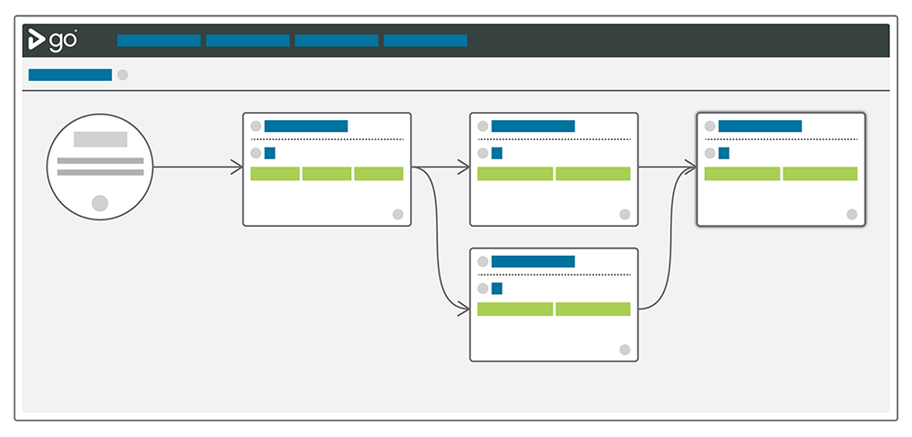

This is the second part of a series called It's not Continuous Delivery if you can't deploy right now. In this part, I'm going to cover some more common tools in security testing pipelines.
In my experience, automated security testing is pretty rare in CD pipelines. If the job of a pipeline is to make you confident in your release, confidence in your security is a must have. While it's not practical to try to list them all, I'll give a few examples of tools used for this automation. You can find more here.
Tests created by your team and run by tools like the ones in this article should be a key part of any deployment pipeline.
Automation is one part of the solution
Security has to be addressed in a holistic way. Automation is a way to get fast feedback on common security issues. A talented penetration tester will consider scenarios and methods that are not usually automated.
The goal of automation is to catch the "low-hanging fruit". Are we pushing things to Git we shouldn't be? Are we using an old, vulnerable package we shouldn't? Are we violating our own company's rules?
Before committing code
There is a lot you can—and should—do before your code even gets to a pipeline. Generally speaking, CD servers watch your source code repositories for changes and then act on those changes. For many issues, this is too late!
One of the biggest recurring stories we hear about SSH keys, auth tokens, private keys etc., being checked into source control. There was a story a few years ago where a basic search for private id_rsa keys returned over 600 matches on GitHub alone.
Consider incorporating tools that check for these things before they are actually added!
ThoughtWorks recently created Talisman, a tool that is installed as a pre-push hook to Git. The idea is to catch issues before they even get into your source code repository.
Static Application Security Testing (SAST)
Gartner defines SAST as "a set of technologies designed to analyze application source code, byte code and binaries for coding and design conditions that are indicative of security vulnerabilities. SAST solutions analyze an application from the 'inside out' in a nonrunning state."
This starts with having good unit test coverage. Can you authenticate as you should be able to? Are bad authentication requests refused? Are retries being limited properly? Are password policies being properly enforced?
Very early in your build process, your CD server can run some security-specific, source code level tests. These could look for issues ranging from bad code to policy violations.
For Ruby applications, this category includes tools like Brakeman and Bundler-audit.
Brakeman scans the application's source code and can give out lots of different warning types. I particularly like what I'll call policy checking. Someone implements basic authorization when you don't want to allow that? Pipeline stage fails.
Bundler-audit does pretty much what it sounds like. It checks to see if you're using Gems that have known vulnerabilities.
For Java applications, Sonatype has some impressive tools in this area. According to one Sonatype study "of the 106 component ‘parts' used in a typical application, on average 24 have known cyber vulnerabilities, which are rated either critical or severe."
Dynamic Application Security Testing (DAST)
Again quoting Gartner's definition, these are tools which are "designed to detect conditions indicative of a security vulnerability in an application in its running state".
The tools that run against your code are a good start, but they aren't accessing the application like a user. Tools such as Burp, OWASP ZAP, Arachni, w3af and Vega access the application itself, looking for exploit vectors like SQL Injection and cross-site scripting.
Who creates the tests?
Normally, I'm a big proponent of tests being written by the developer as (or preferably before) they write the code. With that said, I don't think it's controversial to state that the average software developer isn't very good at security testing. We should also acknowledge that developers do sometimes leave some doors open on purpose.
I believe security is one of the few areas where having specialists writing and executing the tests is not only acceptable, but preferable. Development teams should seek out these experts and work with them in close collaboration.
Where do the tests go in the CD pipeline?
When people ask this question, they are usually trying to decide if security pipelines or stages should be blocking, meaning that the pipeline can't move forward on failures. I definitely think they should block, but that doesn't mean you can't do other types of testing on the same build.
If your continuous delivery server supports fan-in / fan-out, you can set tests up as entirely separate pipelines that run while other pipelines (or people) are doing other things. In the example below, we've decided that we can go ahead with User Acceptance while the security scans are in progress. We still know that it won't get deployed to our staging environment unless they both pass.

Reminder: tools don't solve problems
I've spent the last 15 years working for makers of software development tools. There are only a few things I'm completely sure of, and one of them is that tools do not solve problems by themselves.
Having the right continuous delivery server (like GoCD) will make your life a lot easier, and having the right security tools will make it easier to find issues fast. None of this is a substitute for expertise.
How do you start?
By starting. Pick an area, automate it. Pick another area, automate it. It will take time, but as that time progresses you'll be more and more confident in the security of your application.
What are some others?
What are some other tools you like? Add them to the comments.